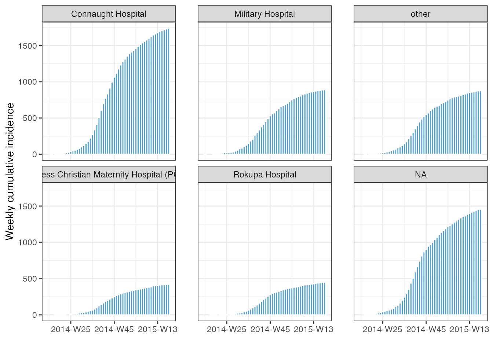

vignettes/handling_incidence_objects.Rmd
handling_incidence_objects.RmdWe try to make incidence() objects easy to work with providing helper functions for both manipulating and accessing data within the objects, and integration with tidyverse verbs.
Sometimes you may find you’ve created a grouped incidence() but now want to change the internal grouping. Assuming you are after a subset of the grouping already generated, then you can use to regroup() function to get the desired aggregation:
library(outbreaks) library(incidence2) # load data dat <- ebola_sim_clean$linelist # generate the incidence object with 3 groups inci <- incidence(dat, date_index = date_of_onset, groups = c(gender, hospital, outcome), interval = "1 week") inci #> An incidence2 object: 2,016 x 6 #> [5829 cases from days 2014-04-07 to 2015-04-27] #> [interval: 1 week] #> [cumulative: FALSE] #> #> bin_date week_group gender hospital outcome count #> <date> <aweek> <fct> <fct> <fct> <int> #> 1 2014-04-07 2014-W15 f Military Hospital <NA> 1 #> 2 2014-04-07 2014-W15 m Military Hospital <NA> 0 #> 3 2014-04-07 2014-W15 f Connaught Hospital <NA> 0 #> 4 2014-04-07 2014-W15 m Connaught Hospital <NA> 0 #> 5 2014-04-07 2014-W15 f other <NA> 0 #> 6 2014-04-07 2014-W15 m other <NA> 0 #> 7 2014-04-07 2014-W15 f <NA> <NA> 0 #> 8 2014-04-07 2014-W15 m <NA> <NA> 0 #> 9 2014-04-07 2014-W15 f Princess Christian Maternity Hosp… <NA> 0 #> 10 2014-04-07 2014-W15 m Princess Christian Maternity Hosp… <NA> 0 #> # … with 2,006 more rows # regroup to just two groups inci %>% regroup(c(gender, outcome)) #> An incidence2 object: 336 x 5 #> [5829 cases from days 2014-04-07 to 2015-04-27] #> [interval: 1 week] #> [cumulative: FALSE] #> #> bin_date week_group gender outcome count #> <date> <aweek> <fct> <fct> <int> #> 1 2014-04-07 2014-W15 f Death 0 #> 2 2014-04-07 2014-W15 f Recover 0 #> 3 2014-04-07 2014-W15 f <NA> 1 #> 4 2014-04-07 2014-W15 m Death 0 #> 5 2014-04-07 2014-W15 m Recover 0 #> 6 2014-04-07 2014-W15 m <NA> 0 #> 7 2014-04-14 2014-W16 f Death 0 #> 8 2014-04-14 2014-W16 f Recover 0 #> 9 2014-04-14 2014-W16 f <NA> 0 #> 10 2014-04-14 2014-W16 m Death 0 #> # … with 326 more rows # drop all groups inci %>% regroup() #> An incidence2 object: 56 x 3 #> [5829 cases from days 2014-04-07 to 2015-04-27] #> [interval: 1 week] #> [cumulative: FALSE] #> #> bin_date week_group count #> <date> <aweek> <int> #> 1 2014-04-07 2014-W15 1 #> 2 2014-04-14 2014-W16 1 #> 3 2014-04-21 2014-W17 5 #> 4 2014-04-28 2014-W18 4 #> 5 2014-05-05 2014-W19 12 #> 6 2014-05-12 2014-W20 17 #> 7 2014-05-19 2014-W21 15 #> 8 2014-05-26 2014-W22 19 #> 9 2014-06-02 2014-W23 23 #> 10 2014-06-09 2014-W24 21 #> # … with 46 more rows
We also provide a helper function, cumulate() to easily generate cumulative incidences:
inci %>% cumulate() %>% facet_plot(facet = hospital) #> plot() can only stack/dodge by one variable. #> For multi-facet plotting try facet_plot()

incidence2 has been written with tidyverse compatibility (in particular dplyr) at the forefront of the design choices we have made. By this we mean that if an operation from dplyr is applied to an incidence() object then as long as the invariants of the object are preserved (i.e. groups, interval and uniqueness of rows) then the object returned will be an incidence() object. If the invariants are not preserved then a tibble will be returned instead. Some examples of these behaviours are given below:
library(dplyr) #> #> Attaching package: 'dplyr' #> The following objects are masked from 'package:stats': #> #> filter, lag #> The following objects are masked from 'package:base': #> #> intersect, setdiff, setequal, union # create incidence object inci <- dat %>% incidence( date_index = date_of_onset, interval = "2 weeks", first_date = "2014-05-20", last_date = "2014-06-10", groups = c(hospital, gender) ) #> 5766 observations outside of [2014-05-20, 2014-06-10] were removed. # filtering preserves class x <- inci %>% filter(gender == "f", hospital == "Rokupa Hospital") x #> An incidence2 object: 2 x 5 #> [2 cases from days 2014-05-19 to 2014-06-02] #> [interval: 2 weeks] #> [cumulative: FALSE] #> #> bin_date week_group hospital gender count #> <date> <aweek> <fct> <fct> <int> #> 1 2014-05-19 2014-W21 Rokupa Hospital f 1 #> 2 2014-06-02 2014-W23 Rokupa Hospital f 1 identical(class(x), class(inci)) #> [1] TRUE # slice operations preserve class x <- inci %>% slice_sample(n = 10) x #> An incidence2 object: 10 x 5 #> [25 cases from days 2014-05-19 to 2014-06-02] #> [interval: 2 weeks] #> [cumulative: FALSE] #> #> bin_date week_group hospital gender count #> <date> <aweek> <fct> <fct> <int> #> 1 2014-06-02 2014-W23 <NA> m 6 #> 2 2014-05-19 2014-W21 Princess Christian Maternity Hospital (PC… m 2 #> 3 2014-05-19 2014-W21 Rokupa Hospital f 1 #> 4 2014-05-19 2014-W21 other f 1 #> 5 2014-06-02 2014-W23 Rokupa Hospital f 1 #> 6 2014-06-02 2014-W23 Princess Christian Maternity Hospital (PC… f 0 #> 7 2014-05-19 2014-W21 <NA> f 4 #> 8 2014-05-19 2014-W21 other m 3 #> 9 2014-05-19 2014-W21 Connaught Hospital f 4 #> 10 2014-06-02 2014-W23 other f 3 identical(class(x), class(inci)) #> [1] TRUE inci %>% slice(1, 5, 10) %>% class() %>% identical(class(inci)) #> [1] TRUE # mutate preserve class x <- inci %>% mutate(future = bin_date + 999) x #> An incidence2 object: 24 x 6 #> [63 cases from days 2014-05-19 to 2014-06-02] #> [interval: 2 weeks] #> [cumulative: FALSE] #> #> bin_date week_group hospital gender count future #> <date> <aweek> <fct> <fct> <int> <date> #> 1 2014-05-19 2014-W21 Connaught Hospital f 4 2017-02-11 #> 2 2014-05-19 2014-W21 Military Hospital f 2 2017-02-11 #> 3 2014-05-19 2014-W21 other f 1 2017-02-11 #> 4 2014-05-19 2014-W21 Princess Christian Maternity H… f 3 2017-02-11 #> 5 2014-05-19 2014-W21 Rokupa Hospital f 1 2017-02-11 #> 6 2014-05-19 2014-W21 <NA> f 4 2017-02-11 #> 7 2014-05-19 2014-W21 Connaught Hospital m 4 2017-02-11 #> 8 2014-05-19 2014-W21 Military Hospital m 2 2017-02-11 #> 9 2014-05-19 2014-W21 other m 3 2017-02-11 #> 10 2014-05-19 2014-W21 Princess Christian Maternity H… m 2 2017-02-11 #> # … with 14 more rows identical(class(x), class(inci)) #> [1] TRUE # rename preserve class x <- inci %>% rename(left_bin = bin_date) identical(class(x), class(inci)) #> [1] TRUE # select returns a tibble unless all date, count and group variables are preserved inci %>% select(-1) #> Note: incidence2 class dropped in returned object #> # A tibble: 24 x 4 #> week_group hospital gender count #> <aweek> <fct> <fct> <int> #> 1 2014-W21 Connaught Hospital f 4 #> 2 2014-W21 Military Hospital f 2 #> 3 2014-W21 other f 1 #> 4 2014-W21 Princess Christian Maternity Hospital (PCMH) f 3 #> 5 2014-W21 Rokupa Hospital f 1 #> 6 2014-W21 <NA> f 4 #> 7 2014-W21 Connaught Hospital m 4 #> 8 2014-W21 Military Hospital m 2 #> 9 2014-W21 other m 3 #> 10 2014-W21 Princess Christian Maternity Hospital (PCMH) m 2 #> # … with 14 more rows x <- inci %>% select(everything()) x #> An incidence2 object: 24 x 5 #> [63 cases from days 2014-05-19 to 2014-06-02] #> [interval: 2 weeks] #> [cumulative: FALSE] #> #> bin_date week_group hospital gender count #> <date> <aweek> <fct> <fct> <int> #> 1 2014-05-19 2014-W21 Connaught Hospital f 4 #> 2 2014-05-19 2014-W21 Military Hospital f 2 #> 3 2014-05-19 2014-W21 other f 1 #> 4 2014-05-19 2014-W21 Princess Christian Maternity Hospital (PC… f 3 #> 5 2014-05-19 2014-W21 Rokupa Hospital f 1 #> 6 2014-05-19 2014-W21 <NA> f 4 #> 7 2014-05-19 2014-W21 Connaught Hospital m 4 #> 8 2014-05-19 2014-W21 Military Hospital m 2 #> 9 2014-05-19 2014-W21 other m 3 #> 10 2014-05-19 2014-W21 Princess Christian Maternity Hospital (PC… m 2 #> # … with 14 more rows # Adding rows that are multiples of 2 weeks will maintain class x <- inci %>% slice_head(n = 2) %>% mutate(bin_date = bin_date + 112) %>% bind_rows(inci) x #> An incidence2 object: 26 x 5 #> [69 cases from days 2014-05-19 to 2014-09-08] #> [interval: 2 weeks] #> [cumulative: FALSE] #> #> bin_date week_group hospital gender count #> <date> <aweek> <fct> <fct> <int> #> 1 2014-09-08 2014-W21-1 Connaught Hospital f 4 #> 2 2014-09-08 2014-W21-1 Military Hospital f 2 #> 3 2014-05-19 2014-W21-1 Connaught Hospital f 4 #> 4 2014-05-19 2014-W21-1 Military Hospital f 2 #> 5 2014-05-19 2014-W21-1 other f 1 #> 6 2014-05-19 2014-W21-1 Princess Christian Maternity Hospital (PC… f 3 #> 7 2014-05-19 2014-W21-1 Rokupa Hospital f 1 #> 8 2014-05-19 2014-W21-1 <NA> f 4 #> 9 2014-05-19 2014-W21-1 Connaught Hospital m 4 #> 10 2014-05-19 2014-W21-1 Military Hospital m 2 #> # … with 16 more rows identical(class(x), class(inci)) #> [1] TRUE # Adding rows with dates that are not multiples of 2 weeks drops class inci %>% slice_head(n = 2) %>% mutate(bin_date = bin_date + 30) %>% bind_rows(inci) #> Note: incidence2 class dropped in returned object #> # A tibble: 26 x 5 #> bin_date week_group hospital gender count #> <date> <aweek> <fct> <fct> <int> #> 1 2014-06-18 2014-W21-1 Connaught Hospital f 4 #> 2 2014-06-18 2014-W21-1 Military Hospital f 2 #> 3 2014-05-19 2014-W21-1 Connaught Hospital f 4 #> 4 2014-05-19 2014-W21-1 Military Hospital f 2 #> 5 2014-05-19 2014-W21-1 other f 1 #> 6 2014-05-19 2014-W21-1 Princess Christian Maternity Hospital (PC… f 3 #> 7 2014-05-19 2014-W21-1 Rokupa Hospital f 1 #> 8 2014-05-19 2014-W21-1 <NA> f 4 #> 9 2014-05-19 2014-W21-1 Connaught Hospital m 4 #> 10 2014-05-19 2014-W21-1 Military Hospital m 2 #> # … with 16 more rows
We provide multiple accessors to easily access information about an incidence() objects structure:
get_counts_name(), get_dates_name(), get_date_group_names() and get_group_names() all return character vectors of the column names corresponding to the requested variables.
get_n() returns the number of observations.
get_interval() returns the interval of the object.
get_timespan()returns the number of days the object covers.